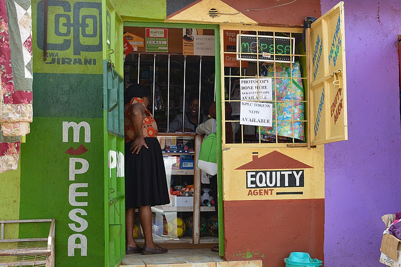

One of the biggest innovations that have taken place in the African continent in decades is the financial service M-Pesa. In Kenya, 72% have a mobile money account (Piper, 2020), mainly due to M-Pesa (Weller, 2020). The M-Pesa program allows its users to transfer and store money without having bank accounts ("M-Pesa", 2020). Additionally, it offers other banking services, such as loans, savings accounts, and more ("M-Pesa", 2020).
There are many reasons why the program is so great. Firstly, the increase in productivity and convenience for Kenyan and other African nations’ citizens have been substantial. Here is a quote from a Kenyan entrepreneur:
“M-PESA has changed my life; it helps me make savings. I don’t need to travel to and from the bank every now and then because I can now deposit and withdraw from my bank account using the M-PESA platform. Previously, I used to make between five and ten trips to the bank in a week. I rarely visit my bank anymore,” says Mr Mungai, shop owner. (Harris, 2020)
Secondly, the innovation has increased the safety for the recipients (Fernandes, 2020). This is both because M-Pesa users do not have to carry their entire wage with them back to their village or send the money with buses, both of which are common problems many people in the African continent face (Kenya, 2020). Lastly, the M-Pesa service has inspired and enabled other African entrepreneurs and businesses to chase their dreams (S., 2020).
M-Pesa is the perfect example of what can be done if entrepreneurs with great ideas are given the tools they need to get their business up and running. We want to enable similar innovations and entrepreneurs through our platform. Click here to read about how we plan to bring African startups and entrepreneurs to the rest of the world.